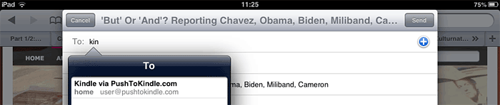

Enter an article URL and click Preview. We'll try to extract the article's content and show you a preview of what we've got. If you're happy, you can go ahead and have it sent to your Kindle. To test, try one of the following:
Once installed you'll see a new toolbar button in your browser. Whenever you load a web article you'd like to read on your Kindle, simply click this button and you'll see the Push to Kindle preview screen. One more click and you've sent the article to your Kindle.
On mobile devices you can send articles to your Kindle using the share menu. On Android and Kindle Fire devices, Push to Kindle will appear as an entry in the share menu once installed. On other mobile devices, you can choose to share by e-mail and use our email service.
Bookmarklet
If you're not using one of the browsers above, you can use our bookmarklet. To quickly and easily send content you encounter online to your Kindle, drag the Push to Kindle button below to your browser's bookmarks toolbar. Then whenever you'd like to send the page you're reading to your Kindle, click the bookmarklet.
Push to Kindle can also be used by e-mail. This is particularly useful for iPad, iPhone and Windows Phone users. To use the service from one of these devices, follow the steps below:
Note: The email service is free for the first 25 articles, after that it requires sustainer membership.
On your device, load an article you'd like to send to your Kindle
Choose share page
In the list of options presented, select Mail
Enter your Kindle email address but instead of @kindle.com, enter @pushtokindle.com*
Changing the ending to @pushtokindle.com in step 4 ensures our service processes the article first and then sends it to your Kindle account.
The first time you do this, you'll receive an email from us asking you to confirm the address you're sending from. After confirming, you'll have the opportunity to save your Push to Kindle email address in your contacts list to make future sending faster. (Simply typing 'kin' in to the To: field should show your Push to Kindle address as an option.)

If you own a 3G Kindle device and you want to make sure you will not be charged by Amazon, please send to @free.pushtokindle.com.
* So if your Kindle email address is example@kindle.com, you can send web articles via our service by sending to example@pushtokindle.com. Other supported destinations: @pushtokindle.cn (for accounts in China) and @pushtopbsync.com (for PocketBook users).
Pricing
It's free to get started!
The first 25 articles processed by our e-mail service are free, after that you'll have two options:
Become a FiveFilters.org sustainer for unlimited sending.
Use the service on a pay as you go basis by purchasing credits. (currently unavailable)
You'll be presented with both options once you start using the service.
Compared to @kindle.com
Amazon's Send to Kindle service currently works by accepting documents as attachments to an email message.
Web articles you read online are usually not in a format that can be sent to your Kindle account directly. They need to be cleaned up and converted to a suitable format first.
That's what our service does. We take care of extracting the content and converting the article to a suitable format for your Kindle. We then send the result as an attachment to your Kindle account.
Articles processed by Push to Kindle can be delivered to any Kindle device or app with Wi-Fi and personal document support.
That includes the following devices:
iPad/iPhone/iPod touch — Install the free Kindle app
Note: Amazon does not yet support delivery of personal documents in Kindle for Windows Phone and Kindle for PC.
If you have an e-reader that's not a Kindle, we also offer EPUB, MOBI and PDF downloads. These can be manually transferred via cable or downloaded over the web — depending on your device. If you need help, feel free to contact us at help@fivefilters.org.
How does it work?
Push to Kindle works by processing web pages in roughly the following way:
If you like the service and you're able to contribute towards it, please consider signing up for a sustainer account. Your contribution will help us maintain the service and continue developing it. You'll also receive an activation key to use with our Push to Kindle email service, allowing you to send as many articles as you like from your iPhone or iPad.
'Around the world, airlines carried 4.3 billion passengers in 2018, an increase of 38 million compared to the year before. Aviation accounts for about 2 percent of global greenhouse gas emissions.'https://t.co/md8jXuBIde
(Homepage: ‘7 ways’ as 12 Jan. 3 pieces on plastics/waste – fashion, newspaper wrappers, art – but no further context re climate change) pic.twitter.com/h3jQ3XYRmo